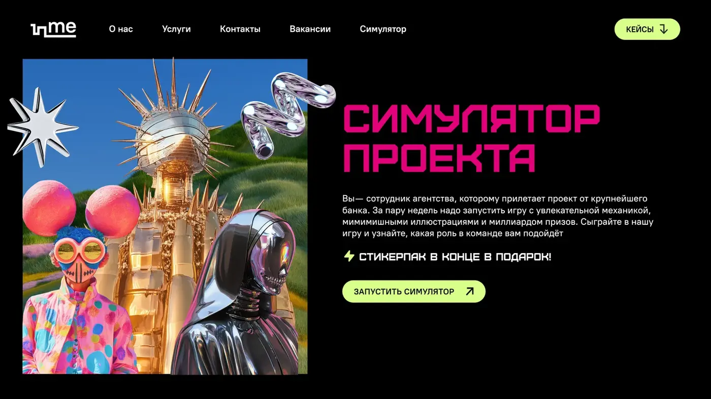
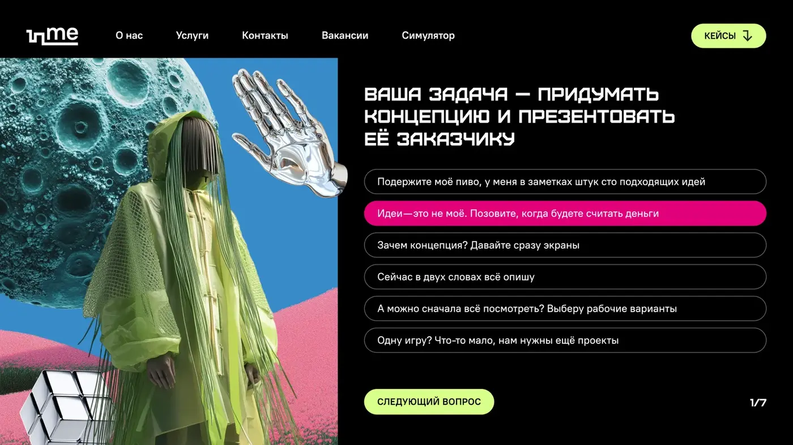
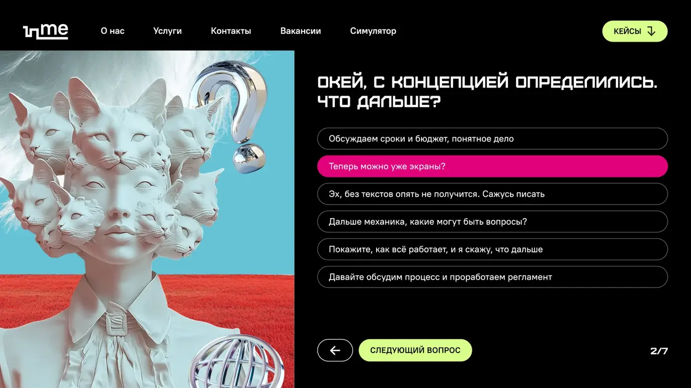
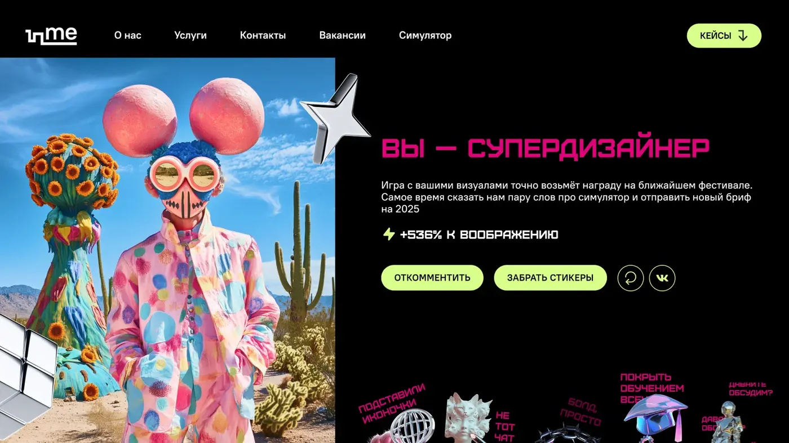
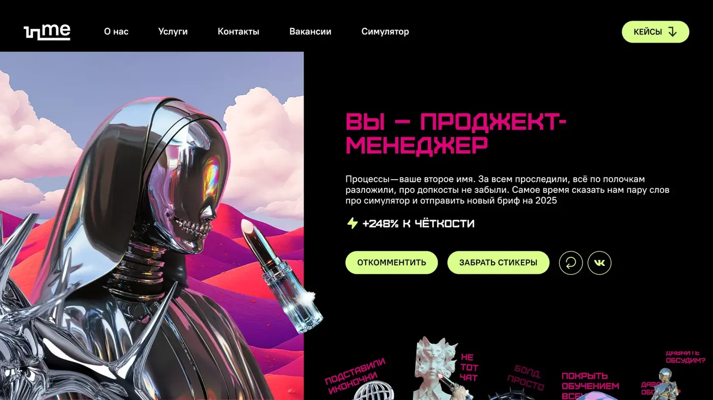

Interactive experience · Employer brand · Game design
СИМУЛЯТОР
ПРОЕКТА
Интерактивная игра о реальном агентском процессе: пользователь проходит путь от брифа и концепции до правок, разработки и запуска — и узнаёт, какая роль в команде ему подходит.
ФорматInteractive test / Landing
Механика7 ситуаций production-процесса
РольArt Direction / Visual concept
РезультатПерсональный тип роли + sticker pack
О проекте
Показать команду через игру
Вместо стандартного рассказа об агентстве пользователь получает проект от крупного банка и принимает решения на каждом этапе: придумывает концепцию, распределяет задачи, проходит правки, готовит запуск и оценивает результат.
Ответы формируют персональный профиль — креатора, дизайнера, редактора, продюсера или другого участника команды. Так employer brand превращается в опыт, а не в декларацию.
Interactive narrativeVisual identityCharacter system





NEXT CASE
↗